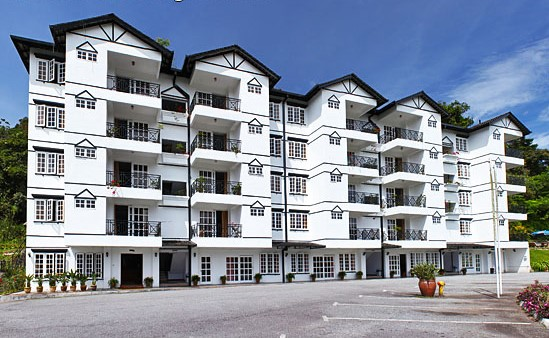

about
Cameron Highlands has a large range of hotels, resorts and apartments providing holiday accommodation - concentrated mostly in Tanah Rata and Brinchang towns. Listed below major hotels in Camerons - linked to information pages with photos of rooms, facilities and view. The largest resorts that provide the best accommodation available are listed first, followed by family apartments (suitable for large groups), and lastly, budget hotels. A room booking option is provided at each hotel page, with competitive rates courtesy of Agoda. Finally, travel outside school and public holidays to enjoy an uncluttered holiday at Cameron Highlands along with the lowest hotel rates.